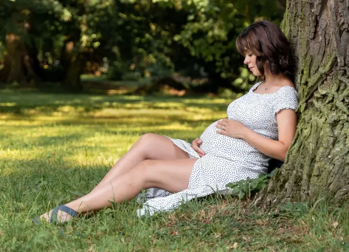
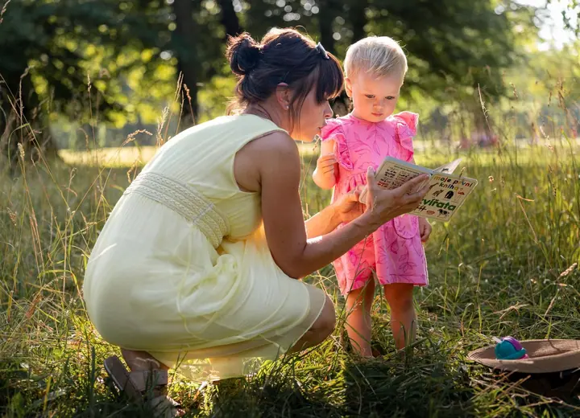

jedna
Svatební fotografie
Na focení svateb se specializuji. Fotím od ranních příprav přes obřad a skupinky až po první tanec a prskavky, podle toho, jaký balíček si vyberete.

Svatební fotograf a kameraman · Moravskoslezský kraj, Olomoucký kraj, Zlínský kraj

Jmenuji se Ladislav Václavík a fotím svatby, páry a budoucí rodiče. Fotografii jsem studoval na konzervatoři a nejraději fotím lidi, u kterých se snažím zachytit, co mezi nimi opravdu je.
Více o mně
Co dělám
jedna
Na focení svateb se specializuji. Fotím od ranních příprav přes obřad a skupinky až po první tanec a prskavky, podle toho, jaký balíček si vyberete.
dvě
Snažím se zachytit emoce a to, co mezi vámi dvěma je, aby vám zůstala trvalá vzpomínka. Raději fotím venku, ale domluvit se můžeme i na ateliéru.
tři
Klidné focení v přírodě, sama nebo s partnerem. Hodně pracuji s přirozeným světlem, nejraději v podvečer.
Ze svatby vám připravím i videoprezentaci složenou z fotek, videa a hudby, kterou si sami vyberete. Ukázky najdete na YouTube.
Raději fotím venku, v přírodě a v přirozeném světle.


Za objektivem
Fotografii jsem vystudoval na konzervatoři a pak jsem absolvoval řadu seminářů a přednášek. Specializuji se na svatby, ale rád fotím i páry, těhotenské focení, rodiny nebo koncerty.
K focení přistupuji zodpovědně a každé fotografii věnuji péči i při úpravách. Používám kvalitní techniku, kterou průběžně obnovuji. Raději fotím venku v přírodě, ale když je potřeba, mám i mobilní fotostudio pro případ nepříznivého počasí.
Nekončím u souborů na flash disku. Fotky vám vytisknu, připravím fotosešit, fotoknihu i videoprezentaci s vaší hudbou. Ceník je spíš orientační, takže když potřebujete něco jinak, napište mi a domluvíme se.
Ladislav
Nejdřív se potkáme a probereme, jak si svůj den představujete. U větších balíčků k tomu patří i předsvatební focení.
Fotím podle domluvy obřad, skupinky a portréty, případně celý den od ranních příprav až po zábavu.
Vybrané snímky pečlivě upravím ve Photoshopu a předám vám je na flash disku.
K fotkám dostanete tisk, fotosešit nebo fotoknihu a videoprezentaci složenou z fotek, videa a vámi vybrané hudby.
Portfolio
Fotografie jsou ilustrační
Otázky
Mám tři balíčky: Min za 8 000 Kč, Střed za 15 500 Kč a Max za 19 500 Kč. Nabídka je orientační, rád se přizpůsobím vašim požadavkům.
V Moravskoslezském, Olomouckém a Zlínském kraji je cestovné v ceně. Jinde účtuji 8 Kč za kilometr, pracuji v rámci celé České republiky.
U balíčků Střed a Max nabízím slevu 10 %, pokud je termín mimo sezónu (říjen až duben) a zároveň mimo víkend (pátek až neděle).
Podle balíčku 100 až 250, 200 až 400, nebo 300 až 600 upravených fotografií na flash disku.
Párové focení stojí 4 000 Kč a doprava je v ceně. Fotím v Moravskoslezském a Olomouckém kraji a v Praze, raději venku, ale můžeme i do ateliéru.